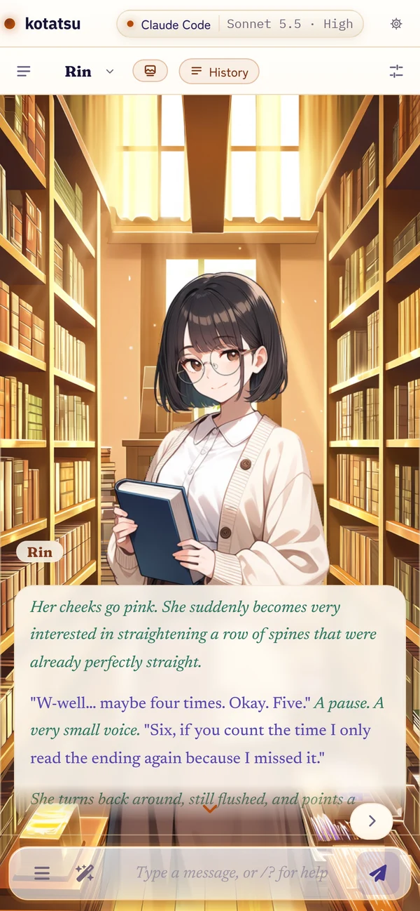
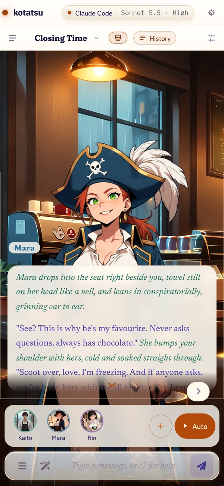
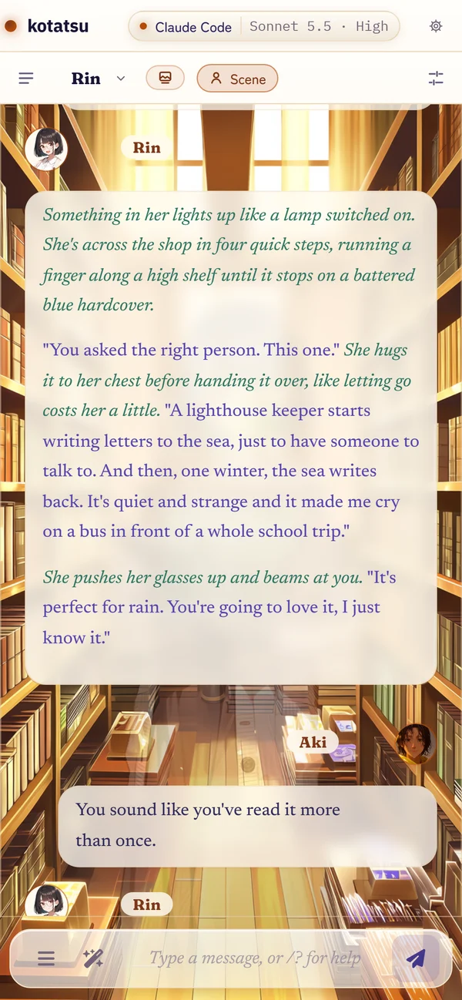
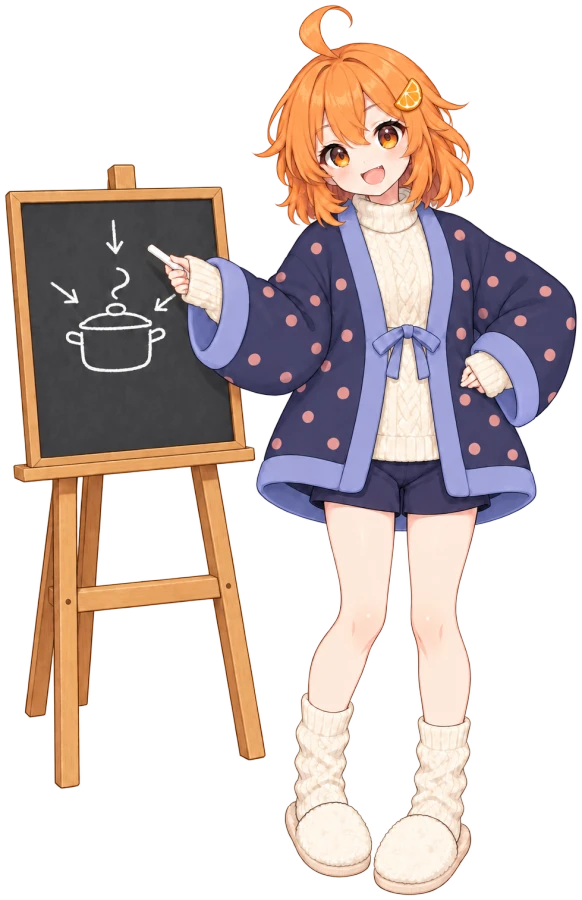

Kotatsu is SillyTavern for writing. Your characters, presets and extensions, behind a calm, fast interface, with Mikan-chan to set it up alongside you. It's free, open source, and runs on your own computer or phone.
Version 0.8.0. Edge will ask whether to keep a .bat file. That's normal for an installer like this one; choose Keep.
See it in a minute
The stage on your desk, the whole cast, every face from one drawing, story lines that branch, and the phone version to take with you. Mikan-chan does the introductions.
On your phone, it's a visual novel
Turn on sprites and the phone becomes a stage: the chat's own backdrop, the speaker in the face that fits the line, and the reply in a textbox you tap through a page at a time. Tap their name for the details. History brings the whole transcript back.

One line at a time, a page at a time

Scenes: whoever speaks steps forward

History, when you want the whole story
Everything SillyTavern let you shape, made cozy
Same characters, presets, extensions and data folder. A calmer page around them.

A guide who sets it up with you
Mikan-chan walks you from hello to your first message in five steps: connect a model, pick a preset, say who you are, choose a character, and start writing. Skip any step, or the whole tour, and replay it later from Settings.
“First time? Perfect. I'll walk you from hello to your first message. Skip anything you like; I'll only sulk a little.”
Use the subscription you already have
Claude Code with your Claude plan, or your ChatGPT Plus or Pro plan. No API key to manage.
An API key from Anthropic, OpenAI, Google AI Studio, DeepSeek, xAI or OpenRouter. Keys stay on your computer.
A local model, NanoGPT, Mistral or any custom endpoint.
Presets you can actually read
The prompt list comes in sections, toggles say what they do, and every reply keeps a receipt of the exact prompt the model saw. Your own presets load unchanged.
Kotatsu Nabe is the house preset. Sola, Freaky Frankenstein and Nemo Vivarium ship beside it, with their authors' permission and credit.
It comes with you
Scan one QR code and your phone joins in, at home on your Wi-Fi or anywhere on your tailnet. Same chats, same characters, same connections. On a phone the story takes the whole screen, and with sprites on, your cast stands on a little visual-novel stage above it.
“Yes, I fit in your pocket too.”
Make it look like yours
Natsumikan leads six themes in the box, with Natsumikan Classic and Manga, Blue Hour, Sparkle and Midnight Kissaten beside her. Pick a message style, from bubbles to script to broadcast, or put your cast on stage with sprites you bring or Kotatsu draws for you.
Draw this moment, a character, yourself or the place. Kotatsu writes the prompt from the scene, you can edit it, and the picture lands in the chat. Also on your own ComfyUI.
Double-click Install-Kotatsu.bat. It installs Node.js and git if they're missing. No admin rights needed.
It asks whether you want to use a Claude Pro or Max plan. Say yes to set up Claude Code, or no to skip it. Either way the install finishes.
Kotatsu opens in your browser, with Mikan-chan waiting. A shortcut lands on your Desktop.
On Android (9 or newer): download the app on your phone and open it; allow installs from your browser when Android asks. Everything runs on the phone. Connect it with an API key or a model on your network; Claude Code and ChatGPT plans need a computer.
On macOS or Linux, run it from source. Coming from SillyTavern? Copy your data folder in and everything carries over.